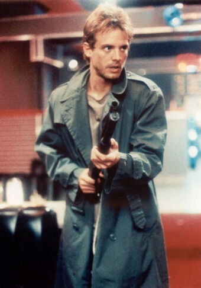
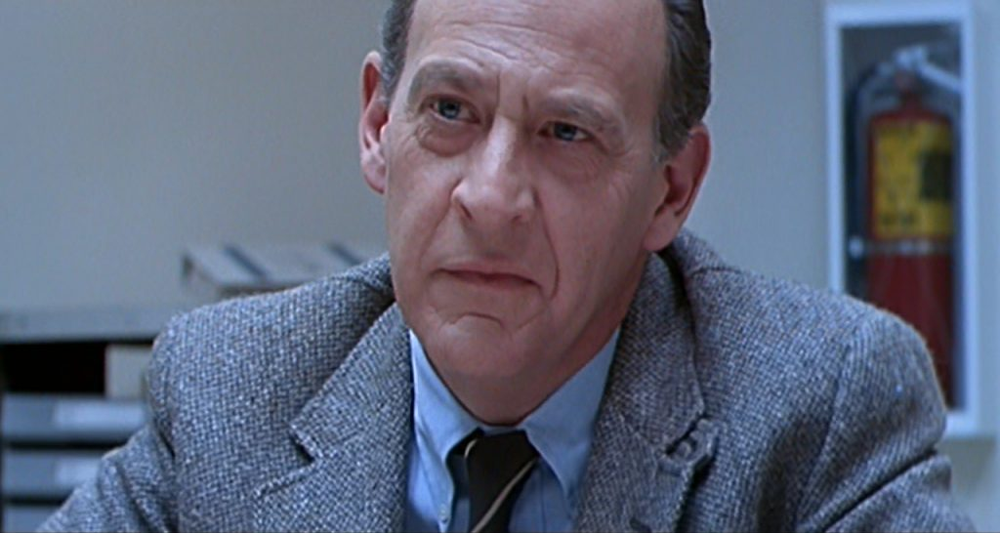
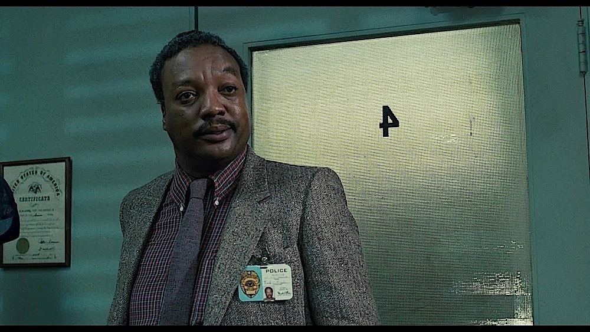
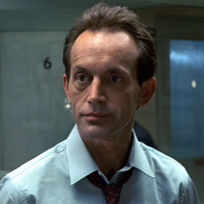

Reparto
Terminator (Arnold Schwarzenegger)
Sarah Connor (Linda Hamilton)
Kyle Reese (Michael Biehn)

Dr. Peter Silberman (Earl Boen)

Teniente Ed Traxler (Paul Winfield)

Detective Vukovich (Lance Henriksen)
